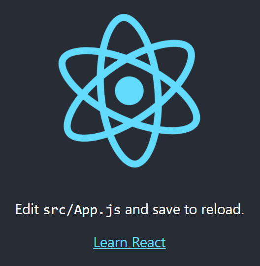

먼저 개발자들에게 명확한 관념 모델(static mental model)을 제공합니다.
관념 모델은 무엇이 어떻게 동작하는지 이해할 때 진행되는 일련의 사고 프로세스를 의미합니다.
즉, 논리적으로 이치에 맞는 사고 모델을 제공한다는 것이다.
-
페이스북이 만든 사용자 구축을 위한 UI 라이브러리
-
-
Just the UI
-
Virtual DOM
-
Data Flow
-
JSX
-
Flux
-
Create React App
create-react-app : 페이스북에서 만들고 지속적으로 업데이트 되는 공식적인 boilerplate이기 때문에 프로세스 개발이 쉽다
create-react-app의 특징인데, 모든 설정들이 캡슐화 되어있다.
사용자로 하여금 설정들을 건들지 못하도록 실제 package.json을 숨겨두고,
webpack설정과 관련된 부분들도 별도의 설정이 필요 없도록 처리 되어 있다.
이는 개발자들이 소스코드에만 집중할 수 있도록 배려한 것이라고 생각하면 된다.
서버에서 처리하는 로직을 JavaScript로 구현하는 부분이 많아지면서 웹 서비스 개발에서 JavaScript로 작성하는 코드의 양도 늘어났습니다.
코드의 양이 많아지면 코드의 유지와 보수가 쉽도록 코드를 모듈로 나누어 관리하는 모듈 시스템이 필요해집니다.
그러나 JavaScript는 언어 자체가 지원하는 모듈 시스템이 없습니다.
이런 한계를 극복하려 여러 가지 도구를 활용하는데 그 도구 가운데 하나가 webpack입니다.
WebPack
my-app을 npx를 통해 create-react-app의 my-app을 설치
$ npx create-react-app my-app
윈도우 버전의 경우 npx를 이용하지 못할 수 있음. 아래의 npm 을 이용해 설치
npm install -g create-react-app
create-react-app react-todo
# npx를 이용할 수 없고, 위의 링크로 설치 후
cd react-todo
npm start
# start시 에러가 발생할 경우
# 윈도우에서 실행할 경우에도 아래의 npm 모듈들에 대한 다운로드가 필요하다.
# npm install --save-dev {모듈} 을 이용하여 필요한 모듈을 설치 한다.
# npm install --save-dev eslint-plugin-react
# npm install --save-dev eslint-plugin-jsx-a11y
# npm install --save-dev eslint-plugin-flowtype
# npm install --save-dev eslint-plugin-import
# npm install --save-dev eslint-plugin-react-hooks
# npm install --save-dev babel-eslint
# npm install --save-dev babel-eslint
npm 실행후, 아래와 같이 표시된다면, react JS 로딩에는 성공한 것이다.

<!DOCTYPE html>
<html lang="en">
<head>
<meta charset="utf-8" />
<link rel="shortcut icon" href="%PUBLIC_URL%/favicon.ico" />
<meta
name="viewport"
content="width=device-width, initial-scale=1, shrink-to-fit=no"
/>
<meta name="theme-color" content="#000000" />
<link rel="manifest" href="%PUBLIC_URL%/manifest.json" />
<title>React App</title>
</head>
<body>
<noscript>You need to enable JavaScript to run this app.</noscript>
<div id="root"></div>
</body>
</html>
body {
font: 14px "Century Gothic", Futura, sans-serif;
margin: 20px;
}
ol, ul {
padding-left: 30px;
}
.board-row:after {
clear: both;
content: "";
display: table;
}
.status {
margin-bottom: 10px;
}
.square {
background: #fff;
border: 1px solid #999;
float: left;
font-size: 24px;
font-weight: bold;
line-height: 34px;
height: 34px;
margin-right: -1px;
margin-top: -1px;
padding: 0;
text-align: center;
width: 34px;
}
.square:focus {
outline: none;
}
.kbd-navigation .square:focus {
background: #ddd;
}
.game {
display: flex;
flex-direction: row;
}
.game-info {
margin-left: 20px;
}
import React from 'react'; - ECMASCRIPT6 에서 신규 도입된 새로운 문법
class Square extends React.Component - ECMASCRIPT6 에서 신규 도입된 새로운 문법
import React from 'react';
import ReactDOM from 'react-dom';
import './index.css';
class Square extends React.Component {
render() {
return (
<button className="square">
{this.props.value}
</button>
);
}
}
class Board extends React.Component {
renderSquare(i) {
return <Square value={i} />;
}
render() {
const status = 'Next player: X';
return (
<div>
<div className="status">{status}</div>
<div className="board-row">
{this.renderSquare(0)}
{this.renderSquare(1)}
{this.renderSquare(2)}
</div>
<div className="board-row">
{this.renderSquare(3)}
{this.renderSquare(4)}
{this.renderSquare(5)}
</div>
<div className="board-row">
{this.renderSquare(6)}
{this.renderSquare(7)}
{this.renderSquare(8)}
</div>
</div>
);
}
}
class Game extends React.Component {
render() {
return (
<div className="game">
<div className="game-board">
<Board />
</div>
<div className="game-info">
<div>{/* status */}</div>
<ol>{/* TODO */}</ol>
</div>
</div>
);
}
}
// ========================================
ReactDOM.render(
<Game />,
document.getElementById('root')
);